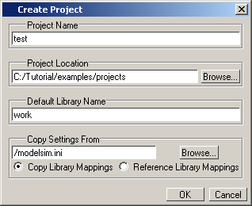

We will
start the process of creating a new project by defining the project
settings.
Procedure
- Create
a new directory and copy the design files for this lesson into it.
Start by
creating a new directory for this exercise (in case other users
will be working with these lessons).
Verilog:
Copy counter.v and tcounter.v files
from /<install_dir>/examples/tutorials/verilog/projects to
the new directory.
VHDL: Copy counter.vhd and tcounter.vhd files
from /<install_dir>/examples/tutorials/vhdl/projects to
the new directory.
- If you
just finished the previous lesson, Questa SIM should
already be running. If it is not already running, start Questa SIM.
- Type “vsim”
at a UNIX shell prompt or use the Questa SIM icon
in Windows.
- Select and
change to the directory you created in step 1.
- Create
a new project.
- Select (Main
window) from the menu bar.
This opens
the Create Project dialog box where you can enter a Project Name, Project
Location (that is, directory), and Default Library Name (Figure 1). You can also reference library settings
from a selected .ini file or copy them directly into the project.
The default library is where compiled design units will reside.
- Type “test”
in the Project Name field.
- Click
the Browse button for the
Project Location field to select a directory where the project file
will be stored.
- Leave
the Default Library Name set to work.
- Click OK.
Figure 1. Create Project Dialog
Box - Project Lab